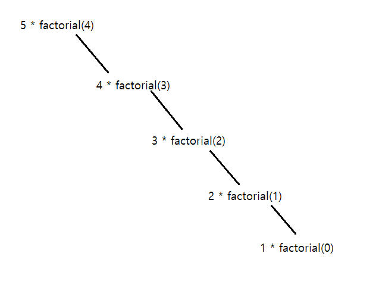
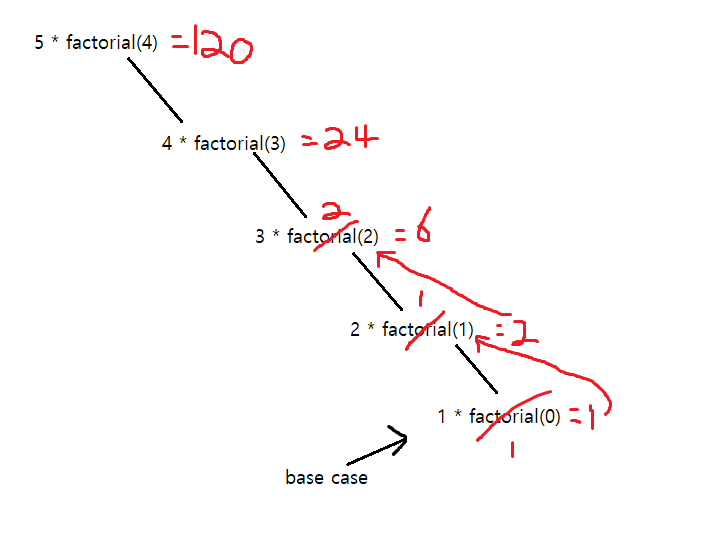

Recursive algorithm:
date posted: 2020-04-30
What is Recursive algorithm?
Recursion problems was pretty hard for me to get a grasp therefore I needed some time to learn what it is exactly before getting into
solving problems.
- Recursion problem:
- break down problem into smaller problems and call same function over and over again while updating answer.
- No calculations until base case(simplest form of problem that can be solved directly) reached.
- Solve using smaller version of the same problem.
Examples
Factorial
- ! = factorial
- n! = (n)(n-1).....(1)
- ex: 5! = 5*4*3*2*1 = 120
- 0! = 1
Above bullet points pretty much explain what factorials are. Let's see what it looks like in code.
- Inside our big function there is smaller version (n-1) of the same problem.
- If we recursively run function it will reach a base case which will return 1 then we
move up until all functions gets return value.
def factorial(n):
if n == 0:
return 1
else:
return n * factorial(n-1)
To clarify our understanding let's go through above code with an example.
let n = 5,
- n=5 !=0 thus goto else statement.
- 5 * factorial(4) --> we are calling smaller function, remember no computations until base case.
- since 4 != 0 again we call 4 * factorial(3) and so on...

- Then we reach 1 * factorial(0) which is our base case since this time it will factorial(0) will return 1.
- Now we start computation. I will make visualization for you to understand.
- we reached base case 1*factorial(0). Since factorial(0)=1, 1*1=1.
- 1*factorial(0) has been called from factorial(1) thus we return our result to factorial(1)
- 2*factorial(1) has been called from factorial(2) thus return result 2.
- Moving up, we reach our first function call and since it got result from factorial(4) = 24 we can now
return our most top level function 5*24 = 120.

This is basically it, with this concept you can solve any recursive problem. Always remember goal of recursive algorithm
is to solve problem with same smaller problems so there will always be same function call inside a function and every function call
will have to decrease parameter value so it eventually reach base case and move back up.
I highly recommend MIT lecture listed in my reference section, simple explanation but lots of information!
Now lets see if I could solve recursive algorithm coding problems. :)